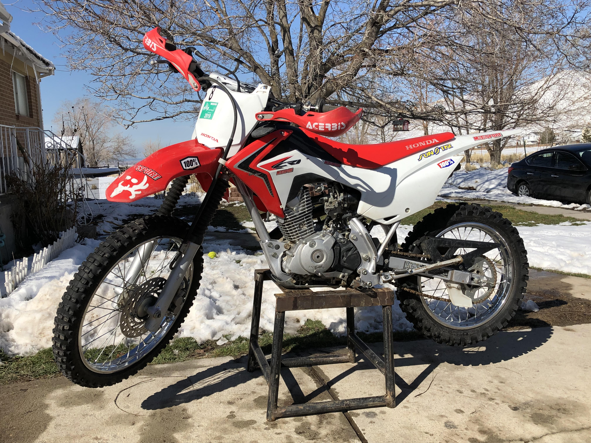

2018 crf125fb
The 125 four stroke honda is in my opinion the greatest bike to learn on it is just big enough to have a clutch a four speed gear box and plenty of low end torque for its size. The bike is amazing for cruising around any simple trails and is great for hills its suspension leaves much desire but it comes with a skid plate so bottoming out the suspension is not a huge concern. The big is still my favorite to practice new techniques because of its tame power and very low weight it can be easily manipulated and skills are in turn much easier to learn on this bike. It offers enough power to keep up with your friends on big bore bikes in rough terrain depending on your skill. The bike however is easily over taken in straight aways because of its 50mph top speed. This bike is much faster and easier to handle in the coroners becuase of its small wheelbase it can easily whip around corners. This bike is very reliable in the two years of owning it the oil was changed once and the only thing to break on it was the starter. This was an easy fix however just cleaning the cables and tightening the ground fixed the problem. This bike is not the greatest in any way for jumps because of its small engine it is easy thrown over for beginners this can be very scary especially in the air and the suspension is easily bottomed out on landing. Overall for learning and trail riding This is one of the best bikes out there.

2018 ktm 250xcw
The 250 ktm is currently the only bike I own and is one of the best bikes Ive ever riden. Its versatility, speed, and acceleration is almost unmatched. However it does leave some things to be desired. Such as at the end of a long ride while cruising back to the truck the seat can be harsh and uncomfortable often. I also find myself wanting even more torque. A few aftermarket parts can fix these problems sure but overall as a stock bike it is very well balanced and certainly can be a competitive bike. The few times i have riden with 450 riders I was able to keep up with them with a bit of skill and luck. In the straights however the ktm has the top speed most bikes dont but the acceleration and torque of almost any big bore bike will leave the ktm in the dust. In more difficult terrain however such as river beds steep uphill climbs the light and nimble 250 has almost every advantage from the capability to lug down low without dying the lighter clutch pull the suspension travel and easy to adjust clickers for the suspension it is almost unbeatable in the scary stuff. The Ktm can be a powerful tool if the powerband is used correctly cruising up steep inclines and awful terrain with ease. The large tires and plush suspension cruise over large rocks with minimal loss of control the large wheelbase helps with stabibility in difficult and steep terrain. The throttle response is smooth and controlable unlike most 450s snappy throttle that can easily lead to whiskey throttle and scray situations in difficult terrain.